1 / 20
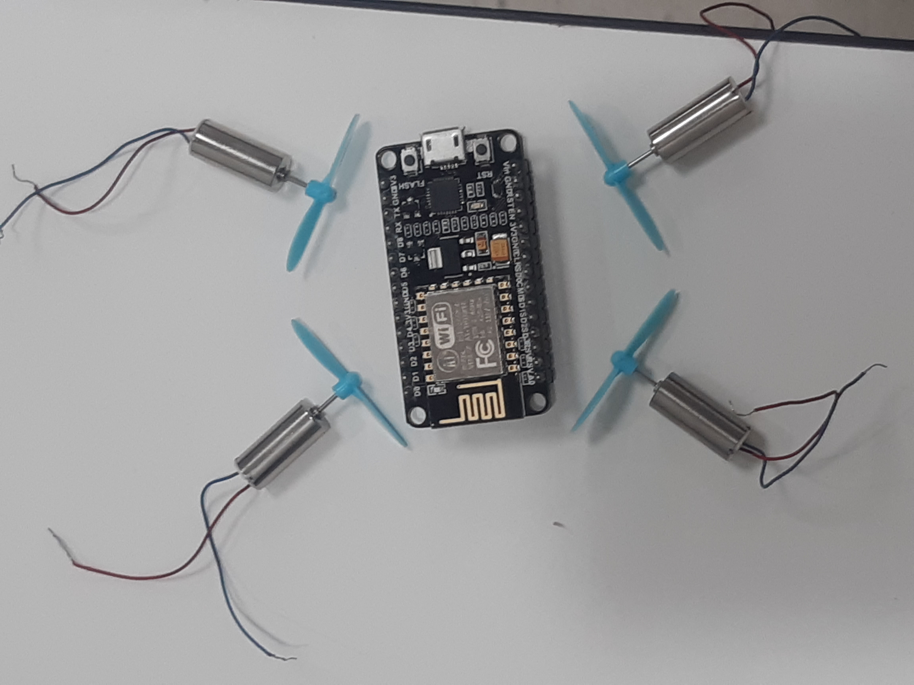
First testing components
2 / 20
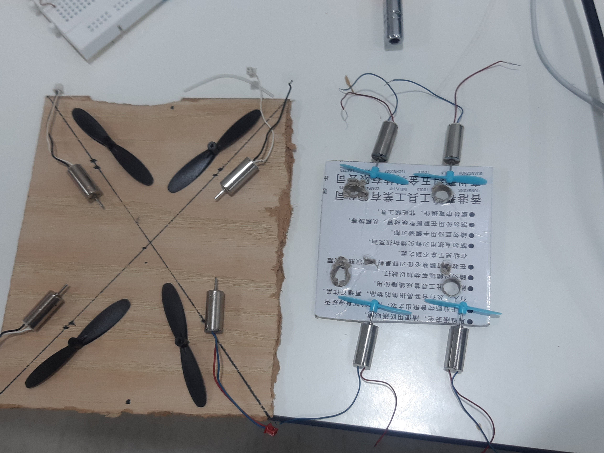
To hold the motors for testing purpose
3/ 20
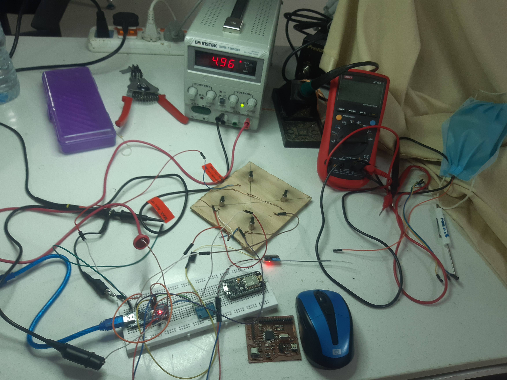
Usual works, Just a mesh!
4 / 20
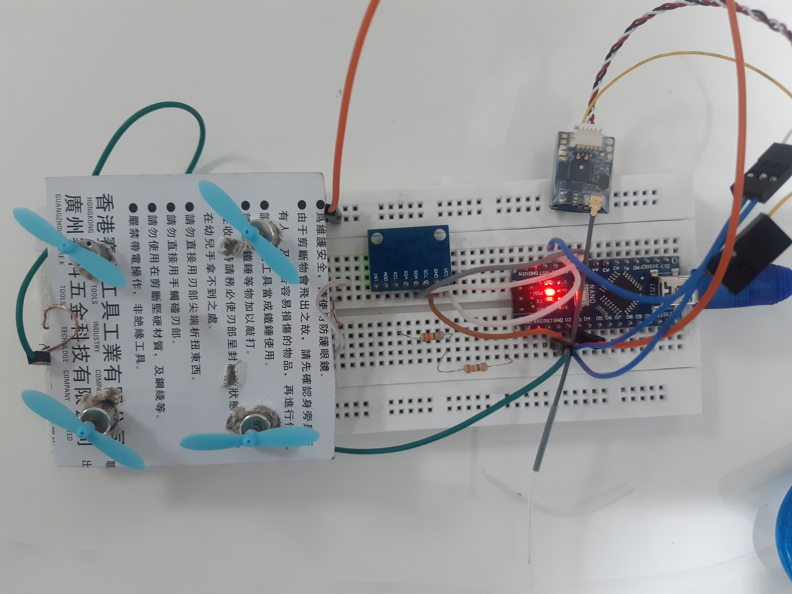
Frst test with Node-MCU
5 / 20
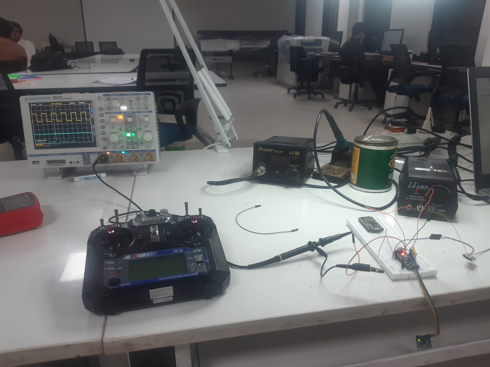
Control signal on ossiloscope
6/ 20

With GENIUS Muhammad Waqas
7 / 20
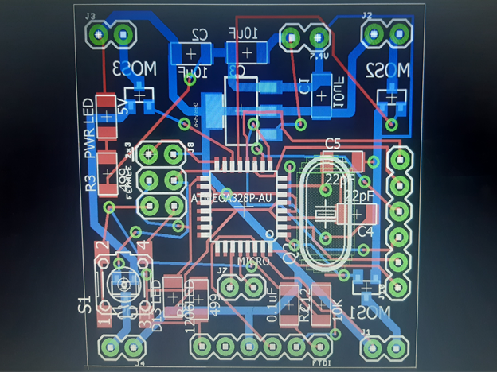
Circuit view afte successful routing
8 / 20

Finally done with routing
9 / 20
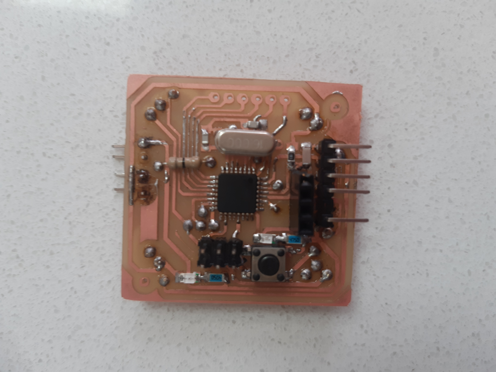
Circuit view after done with soldering
10/ 20
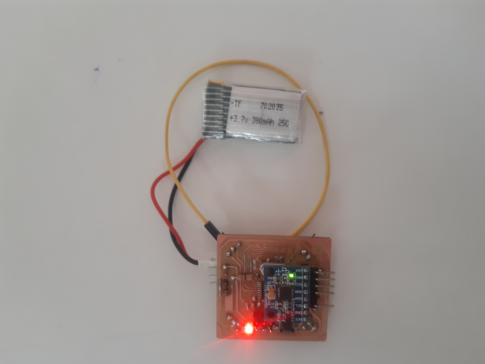
First functional circuit demo
11/ 20
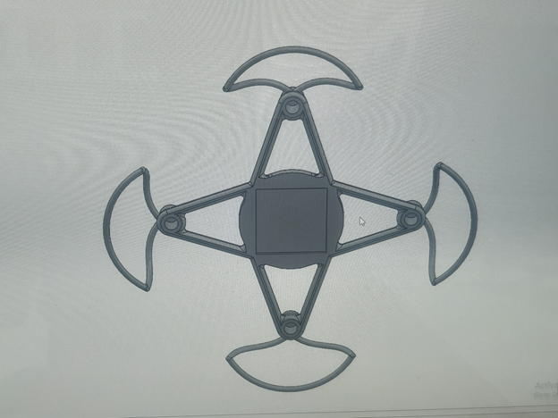
Thanks sir Azmat
13/ 20
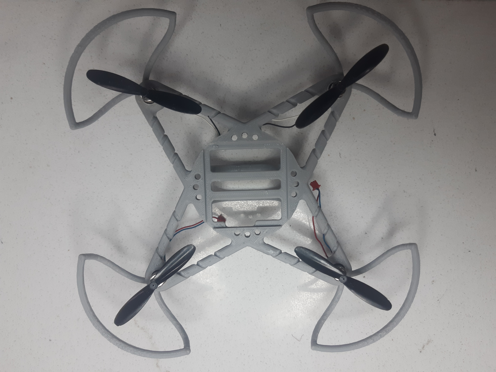
Cool! Done with components placement in the frame
14 / 20
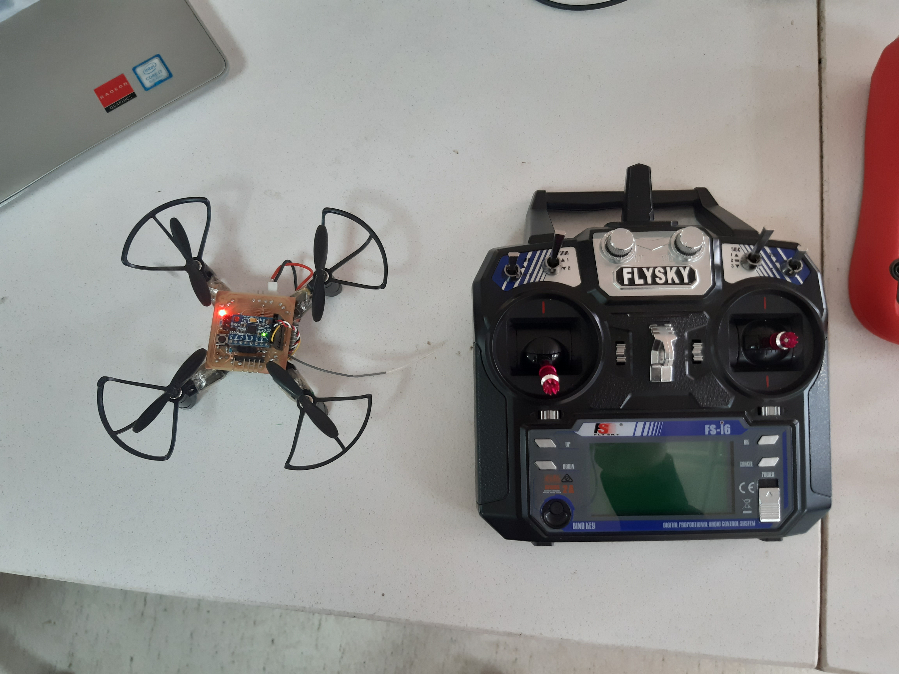
Sorry! Frame was too heavy..Changed the frame
15/ 20
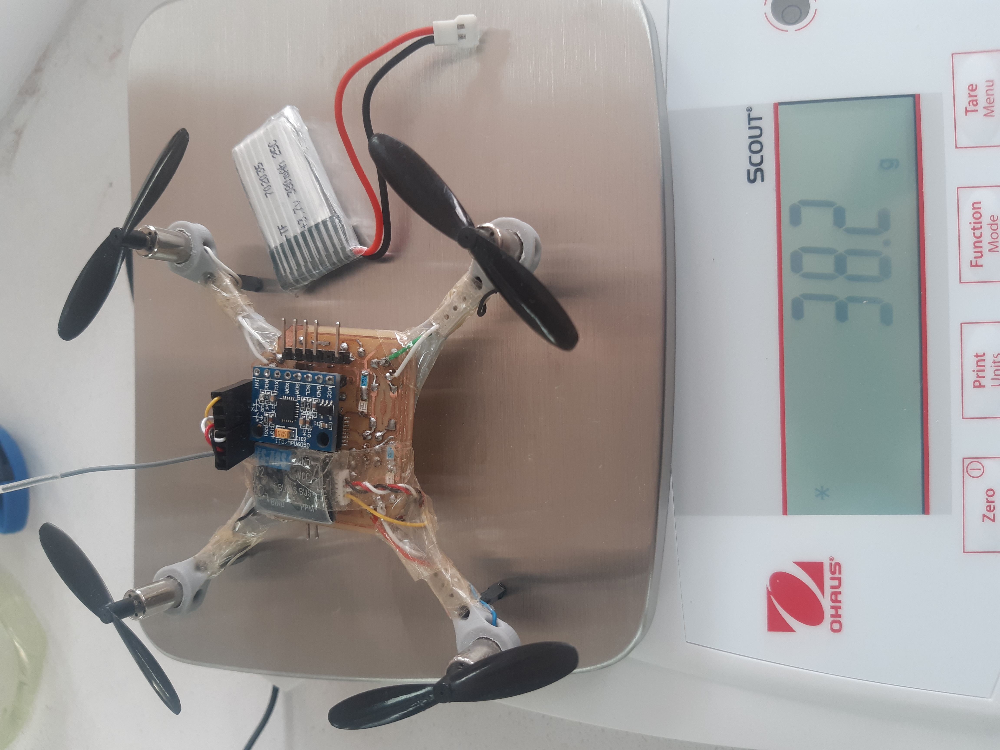
Drone weight without limbs
16/ 20

Engineers while testing their prototype
17/ 20

Drone weight without limbs
18/ 20
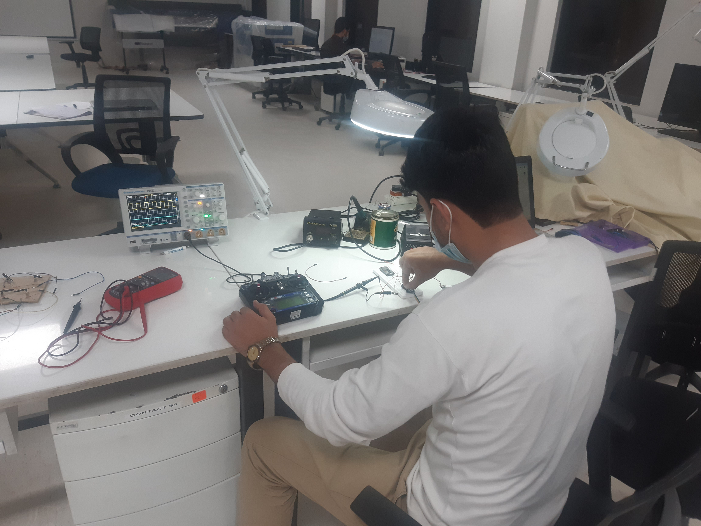
Caption Three
19/ 20
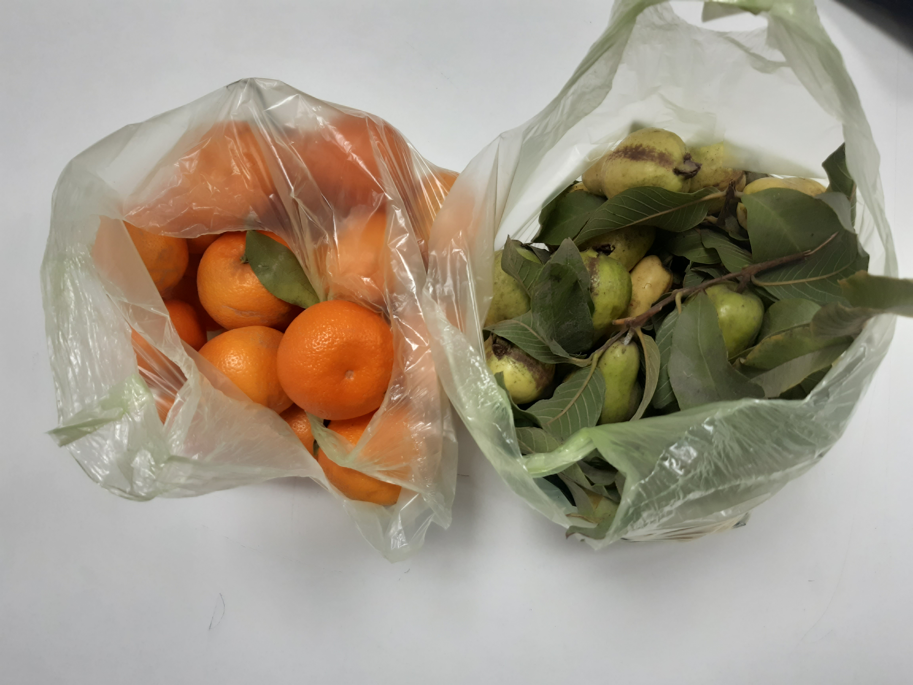
Fruit in the midnight, Cool! Thanks sir ASIM for FOR KIND SUPPORT
20/ 20
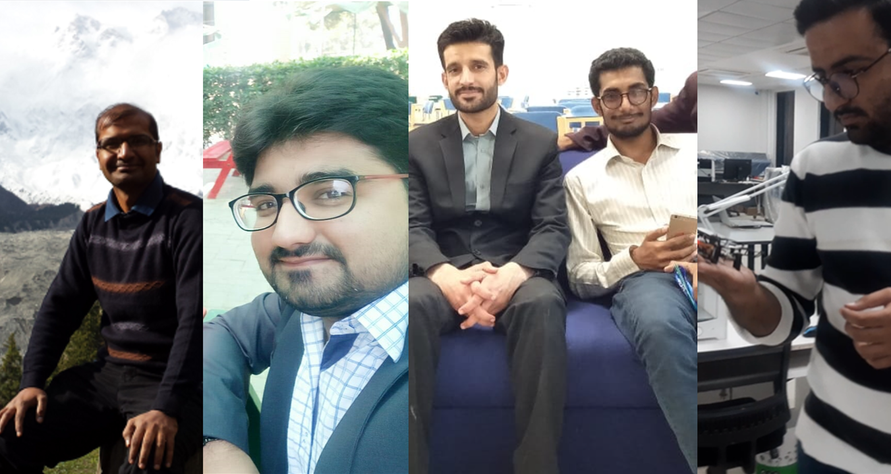
THANK YOU ALL!
|
Background Of Project:
|
The world is always fascinated by the stupendous revolution that
science has brought through inventions and innovations. There are hundreds and thousands
of bizarre tools that science has created for the betterment of mankind,
like engines, computers, internet, medicines etc. All of these technological revolutions
have their own role in human development. Besides this, one of the intriguing works of
science is in the field of aviation, more specifically, in the development of
Unmanned Aerial Vehicles (UAV's).
An unmanned aerial vehicle is an aircraft with or without a human pilot on board. There are several sensors
and devices attached with these machines that provide the ability to fight autonomously
and also capability to control them from ground. These days many universities all around the
globe are in the race to make drones which are efficient, autonomous,cheap,more reliable
and are able to perform complex maneuvers. There are already several models available in
the market that can be used for different purposes: defence, emergency response,
agriculture, home delivery, health care and many more.
With the exponential increase in the uses of these autonomous vehicles, the drone market is skyrocketing!
According to the Drone Market Report 2020, the global drone market will grow from $22.5 billion in 2020
to over $42.8 billion in 2025.
For more details
Click Here!
|
|
Our Goal:
|
By taking all of the above facts into consideration I, along with my
three classmates, decided to choose a project that helps us to understand
the core idea behind the working of UAV's: To make a drone. This was an intricate
and exciting task! We had to complete this project within the period of four months
and we were supposed to make everything from scratch—like a flight controller, case
for drone etc. Beside these conundrums we were so optimistic and keen to make this project
mark up to a standard.
|
|
Purpose Of This Report:
|
This report presents our whole journey of failures
and achievements while working on this
project. In this report we have tried our best to
cover everything step by step, like how
we tackle the intricacies in circuit design,
components interface, coding, case design etc,
so that it can be a perfect guide for other aspirants
of drones. We have provided the links for softwares,
all the essential drivers, references for literature
review, and complete description about components
which are essential for this project.
|
Drone Sketch:
|
When we started our project, the first thing that we
considered was a sketch of how our drone would look
like. This was an important step because we had to make
our drone as much lighter as possible, and for this a
clever design was a necessity. So, we all searched on
multiple sources and analyzed some pre-existing mini
drones. We found hundreds of designs—some were
with hard frames and complex structure, some were
light weighted but without propellers guards. Finally,
we all sat together and shared our sketches. All of
them were intriguing, but the one that seemed
compelling for all of our team members was the
one sketched below. With this design we could reduce
much of the material from frame so that it can be
lighter, and also placement of components like flight
controller and motors, was the best in this masterpiece.
|
|
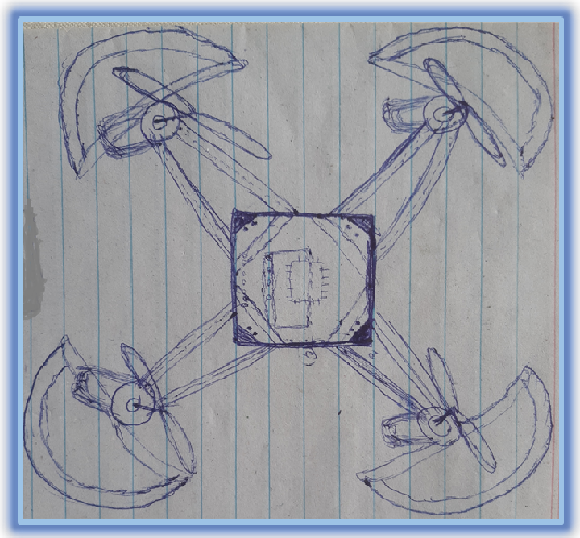
|
Project Requirements:
|
As drone is a type of vehicle which has capability
to fly, to perform complex maneuvers, move autonomously
to a targeted place, so it requires several components
depending upon how advanced one wants to design it.
In our case, we don’t want to make anything
complicated—one that requires a lot of resources and
time, rather we want to make a small prototype: a miniquadcopter.
The components that we needed for successful compilation
of this project, which are explained in the label
About Components , are:
1: Four motors
2: Four propellers
3: A battery
4: A transmitter
5: A receiver
6: A gyro sensor
7: Flight controller
(The components need for flight controller
and its designing procedure is available
Here!)
8: A frame to hold the components.
(Check out CAD Design label,
Click Here!)
|
Block Diagram:
|
|
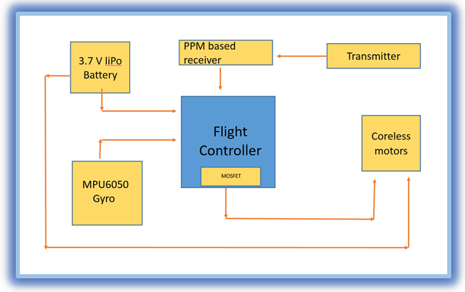
|
Above block diagram represents how different components interact with one another.
At the center there is the flight controller—brain of the drone, which controls
all the process. At the top-left side there is a receiver that communicates with
the transmitter to receive commands from the user and then it feeds the received
data into the flight controller. The Flight controller, more specifically, the
microcontroller receives this data and changes the magnitude of the control signal
(duty cycle of PWM signal) accordingly.
On the top-left side there is a battery—in our case LiPo battery, that supplies
power both to the flight controller and to motors. One thing that one might need
to bear in mind is that battery terminals are not directly connected to the motors
rather one terminal is connected though flight controller, and the other one is directly connected
with the battery. This is more explicitly explained in the components connection below.
On the bottom-left side there is gyro—this is actually gyro and accelerometer together,
it gives the flight controller information about the orientation of the drone (for more details Click Here!).
So, by using the data that is continuously feeded into the flight controller—both from gyro
and receiver, the flight controller adjusts the speed of motors.
|
Electrical Schematic
|
|
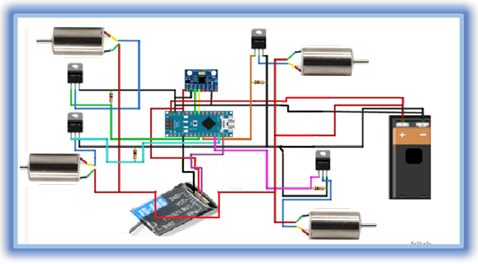
|
Above diagram is a crystal clear
representation of how different components
are physically connected to one
another—through wires. This was one
of the intricate parts of our journey
to dig out the right connections between
the components that we had to used. It took almost
a week, but finally we came up with the above
components configuration.
In the above figure we can see there is an Arduino Nano
that is placed at the center and the rest of components
are connected to it. Though in our case, we have made
our own flight controller but the microcontroller
that we have used is the same as the one used in
the Arduino Nano. Thus the pins, like GPIO, PWM,
SCL and SDA, are the same—due to same
microcontroller ATmega328p. For more
details Click here!
There are four mosfets connected to each of the
four motors to control their speed. One must
note here that the positive terminal of the battery is
directly connected to each corresponding
terminals of motors, but negative connection is
provided through the drain of the mosfet.
This configuration actually allows to control
the magnitude of signal from source to drain by
applying a control signal at the gate terminal.
Thus we can control the speed of motors by changing
the duty cycle of PWM signals.
On the top side there is an MPU6050 sensor which
is connected to SCL and SDA pins of Arduino Nano
and it is powered by a battery through wires
connected to its Vcc and Gnd. As we can see
there are four other pins which are not connected
to any other component. We can't use these pins
in our project but they are useful for some other
purposes.
On the bottom side there is receiver FS-A8S which
is connected to the interrupt pin of Arduino Nano
(pin 02). As this receiver is PPM based, so it requires
only a single wire to transfer all the data of eight channels collectively.
Click here for more details about the components
specifications and working principles.
|